Dafa Fawaz Fachriza Rahman
Mahasiswa S1 Teknik Informatika, Universitas Putra Indonesia Cianjur — Pemrograman Mobile II
BloggerNews Mobile
Saya membuat BloggerNews Mobile, aplikasi web berorientasi perangkat seluler untuk membaca artikel blog melalui Blogger JSON API v3, tempat pengguna menjelajahi artikel berdasarkan kategori, mencari tulisan, membuka tampilan baca, dan menyimpan tulisan untuk dibaca kembali.
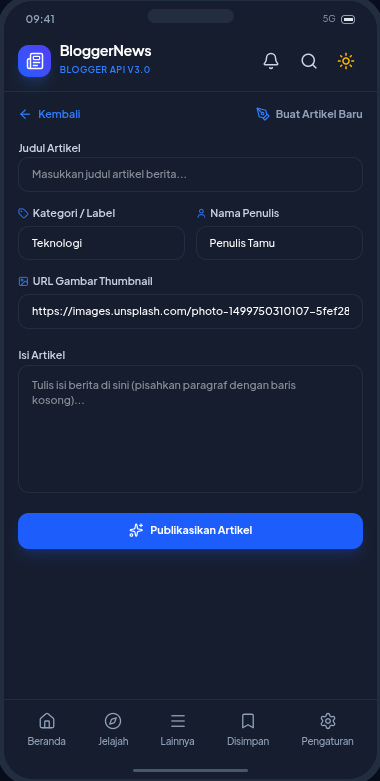
Formulir Buat Artikel
Formulir menerima judul, kategori/label, nama penulis, URL gambar thumbnail, dan isi artikel. Tombol publikasi menambahkan tulisan ke daftar lokal aplikasi dan dapat memicu notifikasi browser; tulisan tersebut bukan publikasi langsung ke Blogger.
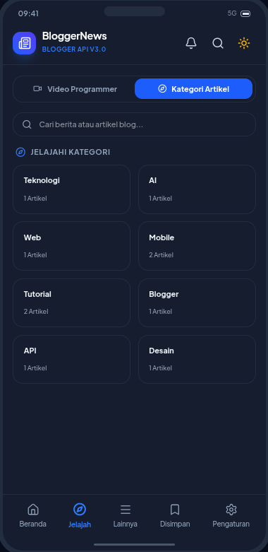
Jelajah Kategori dan Pencarian Artikel
Tab Kategori Artikel menyediakan pencarian serta daftar kategori/label yang ditemukan pada artikel. Pengguna dapat memilih kategori untuk melihat tulisan terkait. Tab ini berbagi halaman Jelajah dengan bagian video programmer.
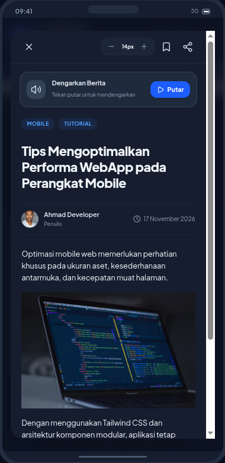
Tampilan Baca Artikel
Pembaca menampilkan isi artikel, label, informasi penulis, kontrol ukuran teks, tombol bookmark dan berbagi, serta pemutar text-to-speech. Pembacaan suara menggunakan fitur ucapan yang tersedia pada browser/perangkat.
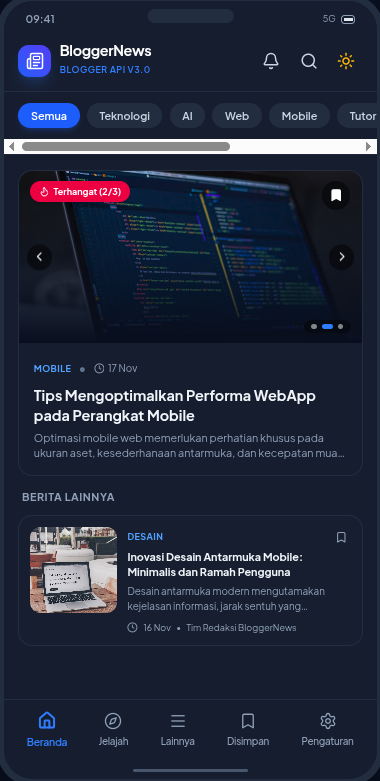
Beranda dan Daftar Artikel
Beranda menampilkan filter kategori, carousel artikel unggulan, ringkasan berita lain, dan navigasi ke Jelajah, Lainnya, Disimpan, serta Pengaturan. Ikon di bagian atas menyediakan akses ke notifikasi dan pencarian.
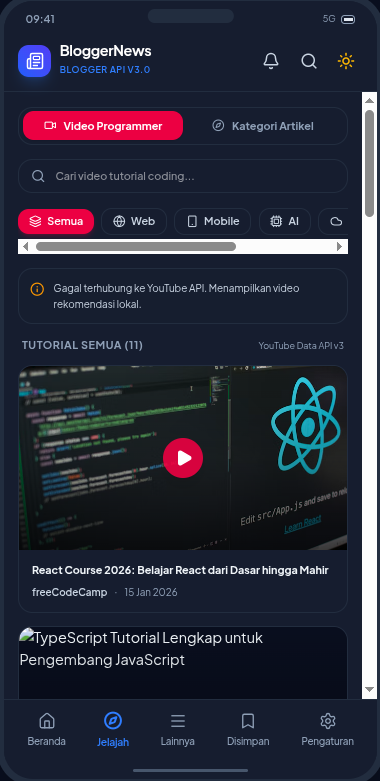
Video Tutorial Programmer
Bagian Video Programmer menyediakan pencarian dan filter topik seperti Web, Mobile, AI, DevOps, dan Algoritma. Screenshot memperlihatkan pemberitahuan bahwa koneksi ke YouTube API gagal dan aplikasi sedang menampilkan rekomendasi lokal.
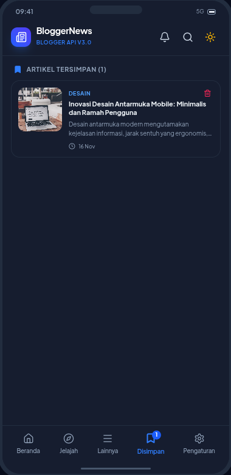
Artikel Tersimpan
Tab Disimpan menampilkan artikel yang telah di-bookmark dan menyediakan kontrol untuk menghapusnya. Daftar bookmark disimpan di localStorage browser sehingga tetap tersedia setelah halaman dimuat ulang pada browser yang sama.
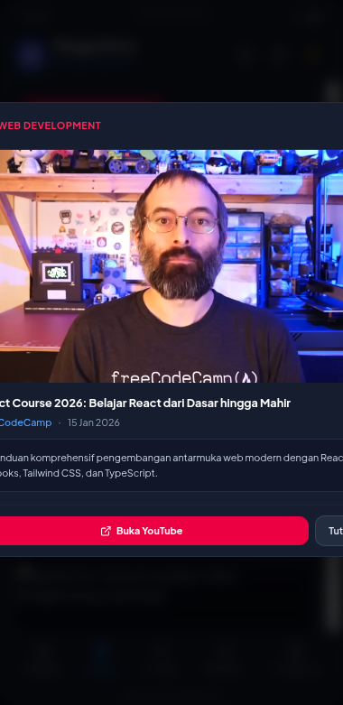
Pemutar Video YouTube
Memilih kartu video membuka tampilan pemutar dan menyediakan tautan untuk membuka video di YouTube. Pemutaran bergantung pada ketersediaan video, jaringan, dan dukungan embed dari YouTube.
KonsulYuk! UNPI
Saya membuat KonsulYuk! UNPI, aplikasi konsultasi berbasis web untuk mahasiswa dan calon mahasiswa Universitas Putra Indonesia (UNPI), tempat pengguna bertanya melalui chat tentang program studi, kehidupan akademik, penerimaan mahasiswa baru, dan pilihan karier, dengan jawaban dari layanan AI di backend.
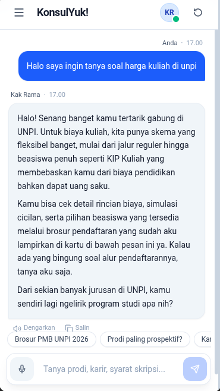
Chat Konsultasi
Contoh ini memperlihatkan pertanyaan tentang biaya kuliah, jawaban asisten yang merujuk informasi pendaftaran, saran untuk mengeksplorasi program studi, serta kolom untuk mengirim pertanyaan lanjutan. Isi jawaban pada contoh tidak dengan sendirinya membuktikan bahwa informasi biaya atau beasiswa sudah diverifikasi.
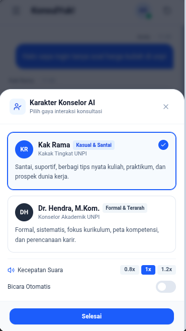
Pemilihan Persona dan Pengaturan Suara
Pengguna dapat memilih persona dengan gaya percakapan berbeda, mengatur kecepatan suara, dan mengaktifkan atau menonaktifkan pembacaan otomatis. Voice chat dan pengenalan ucapan memerlukan izin mikrofon serta dukungan browser.

Peta Karier
Peta karier menghubungkan kelompok program studi dengan contoh posisi kerja, kompetensi, sertifikasi, dan kisaran pendapatan awal. Angka dan indikator pada layar merupakan informasi yang disediakan aplikasi, bukan jaminan gaji atau hasil penempatan kerja.
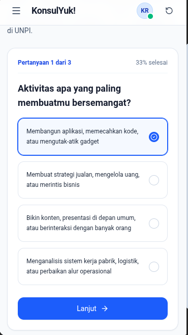
Pertanyaan Kuis Minat
Kuis menampilkan satu pertanyaan pada satu waktu, pilihan jawaban, indikator kemajuan, dan tombol untuk melanjutkan. Pertanyaan pada gambar mengelompokkan minat berdasarkan aktivitas yang disukai pengguna.
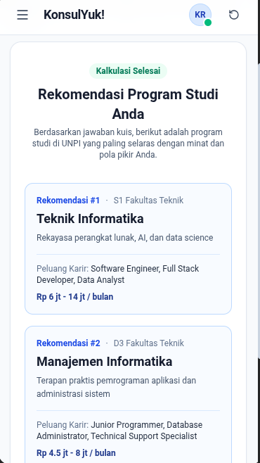
Rekomendasi Program Studi
Setelah kuis selesai, aplikasi menampilkan dua program studi dengan ringkasan bidang, pilihan karier, dan kisaran pendapatan yang tercatat pada dataset. Tombol pada halaman dapat membawa hasil rekomendasi ke chat AI. Hasil ini merupakan pencocokan sederhana, bukan asesmen psikologi atau keputusan penerimaan mahasiswa.
KRS Mahasiswa
Saya membuat SIAKAD Mahasiswa UNPI, portal web untuk membantu mahasiswa mengelola kegiatan akademik, termasuk pengisian Kartu Rencana Studi (KRS), jadwal perkuliahan, dan Kartu Hasil Studi (KHS).
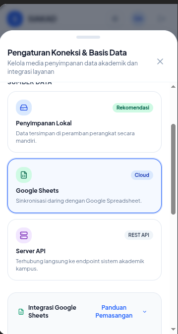
Integrasi Database dan Spreadsheet
Pengguna dapat memilih sumber penyimpanan data akademik, termasuk penyimpanan lokal, Google Sheets, atau Server API. Layar ini juga menyediakan panduan integrasi Google Sheets.
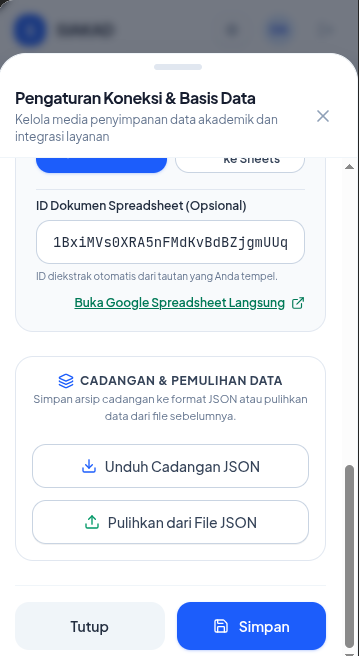
Ekspor, Impor, dan Pemulihan Data
Pengguna dapat menghubungkan spreadsheet dan mengelola cadangan data dengan mengunduh atau memulihkan berkas JSON.
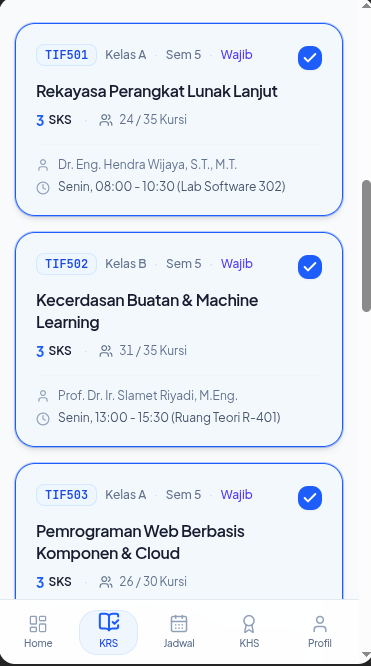
Daftar Mata Kuliah
Layar KRS menampilkan mata kuliah, kelas, semester, status wajib, beban SKS, kapasitas, dosen, dan jadwal. Bilah bawah menunjukkan navigasi utama aplikasi.
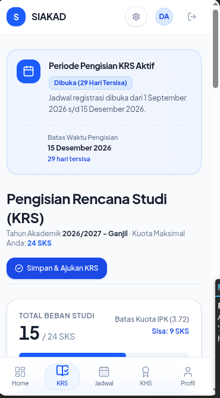
Konfirmasi Pengajuan KRS
Pesan konfirmasi menampilkan bahwa KRS berhasil disimpan dan diajukan, beserta ID KRS, jumlah mata kuliah, total SKS, status persetujuan, dan tombol cetak lembar KRS.
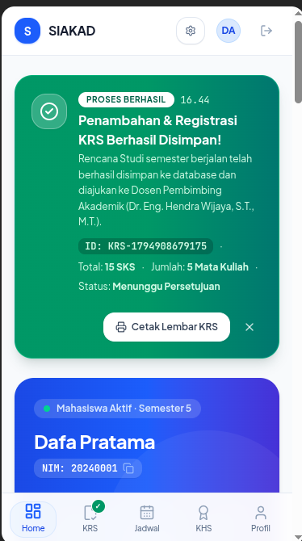
Periode Pengisian dan Beban Studi
Halaman ini menunjukkan periode pengisian KRS yang aktif, batas waktu pengisian, tahun akademik, batas maksimal SKS, total beban studi, dan sisa kuota.
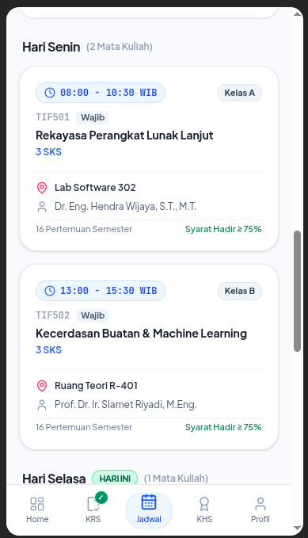
Jadwal Perkuliahan
Jadwal disusun per hari dan menampilkan waktu kuliah, kelas, kode serta nama mata kuliah, lokasi, dosen, dan syarat kehadiran.
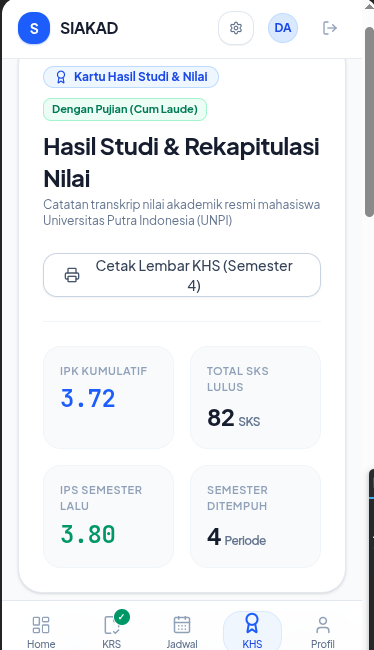
Kartu Hasil Studi
Halaman KHS menampilkan ringkasan hasil studi, termasuk IPK kumulatif, total SKS lulus, IPS semester lalu, semester yang telah ditempuh, dan tombol cetak lembar KHS.
GempaApp
Saya membuat GempaApp, aplikasi Android untuk melihat informasi gempa bumi dan prakiraan cuaca dari layanan BMKG, termasuk gempa terkini, daftar gempa, gempa yang dirasakan, dan visualisasi shakemap.
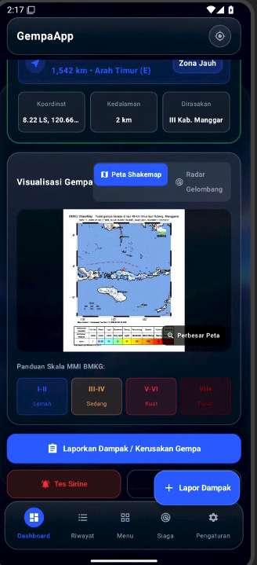
Dashboard dan Visualisasi Gempa
Dashboard menampilkan ringkasan kejadian gempa, informasi lokasi dan jarak acuan, visualisasi shakemap atau radar, serta skala intensitas MMI. Tombol pada layar membuka formulir laporan dampak atau menjalankan tes sirine. Nilai pada gambar menggambarkan data saat screenshot diambil dan bukan pembaruan langsung yang dijamin.
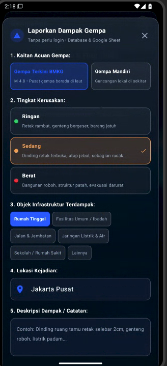
Formulir Laporan Dampak
Formulir memungkinkan pengguna mengaitkan laporan dengan gempa BMKG terkini atau memilih laporan gempa mandiri, menentukan tingkat kerusakan dan jenis infrastruktur, serta mengisi lokasi dan deskripsi. Formulir dapat digunakan tanpa login. Screenshot menunjukkan formulir, bukan bukti bahwa laporan sudah terkirim.
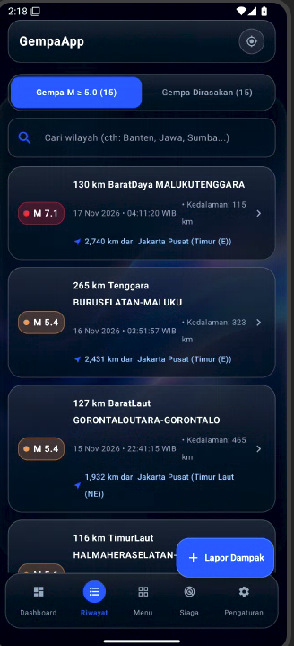
Riwayat Gempa
Riwayat menyediakan tab gempa bermagnitudo minimal 5 dan gempa yang dirasakan, kolom pencarian wilayah, serta kartu berisi magnitudo, waktu, kedalaman, lokasi, dan jarak/arah relatif terhadap lokasi acuan.
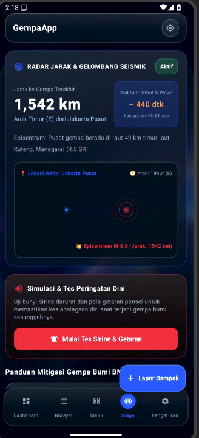
Tab Siaga dan Radar Episentrum
Tab Siaga memvisualisasikan hubungan lokasi pengguna dengan episentrum, menampilkan perkiraan waktu rambat gelombang S, dan menyediakan tombol tes sirine serta getaran. Perhitungan waktu menggunakan perkiraan kecepatan tetap; ini bukan prediksi waktu kedatangan yang presisi atau layanan peringatan dini resmi. Panduan mitigasi tersedia pada bagian bawah layar.
Warung Seblak Mageng
Saya membuat Warung Seblak Mageng, prototipe toko online untuk usaha seblak di Cianjur, tempat pelanggan melihat katalog, memilih tingkat pedas dan topping, lalu melanjutkan pesanan melalui keranjang dan checkout.
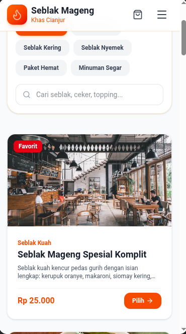
Katalog Menu
Katalog menampilkan pilihan kategori, kolom pencarian, dan kartu menu yang memuat foto, nama, deskripsi singkat, harga, serta tombol untuk membuka produk.
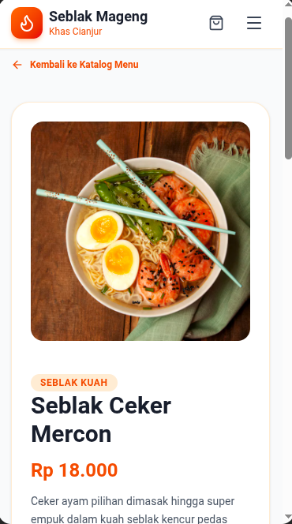
Detail Produk
Halaman detail menyajikan foto, kategori, nama, harga, dan uraian produk sebelum pelanggan menentukan opsi pesanannya.
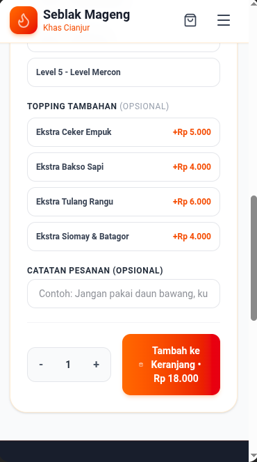
Pilihan Produk dan Tambah ke Keranjang
Pelanggan dapat memilih tingkat pedas, menambah topping opsional, menuliskan catatan, dan menentukan jumlah porsi. Harga tombol mengikuti pilihan yang ditampilkan.
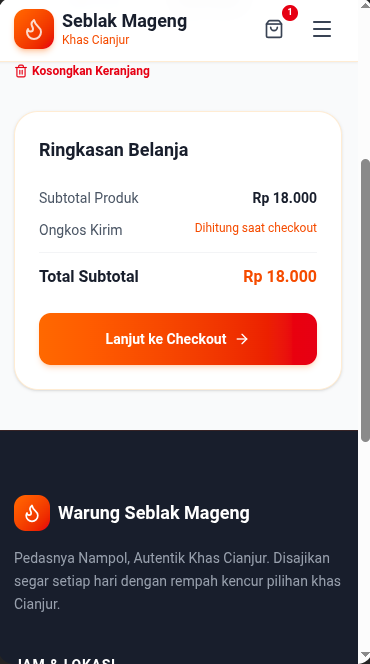
Ringkasan Keranjang
Keranjang merangkum subtotal produk. Ongkos kirim belum dimasukkan pada layar ini dan dihitung pada tahap checkout; pelanggan dapat melanjutkan ke pemilihan alamat dan layanan pengiriman.
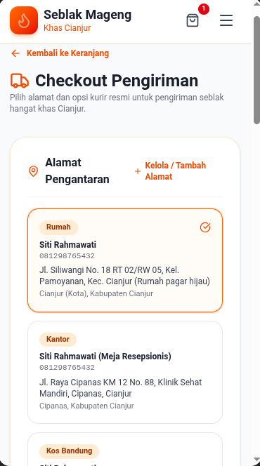
Pemilihan Alamat Pengiriman
Layar checkout menampilkan alamat tersimpan untuk dipilih sebagai tujuan pengiriman dan menyediakan akses untuk mengelola atau menambahkan alamat. Data kontak dan alamat pada gambar merupakan informasi personal dan tidak disalin ke dalam keterangan.
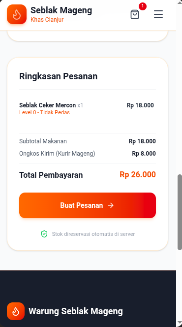
Ringkasan dan Pembuatan Pesanan
Sebelum membuat pesanan, pelanggan dapat memeriksa rincian produk, ongkos kirim, dan total pembayaran. Antarmuka juga menyatakan bahwa stok akan direservasi oleh server. Nilai yang tampak pada gambar adalah contoh tampilan, bukan tarif yang dijamin berlaku.
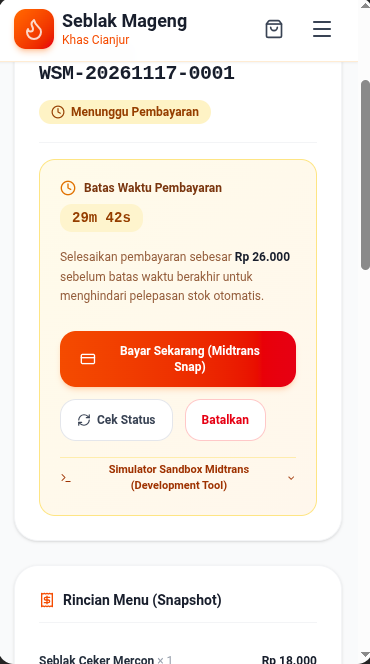
Pembayaran Pesanan
Halaman detail menampilkan status menunggu pembayaran, batas waktu, jumlah yang harus dibayar, serta kontrol untuk membayar, memeriksa status, atau membatalkan pesanan. Terdapat juga simulator sandbox Midtrans untuk pengembangan; tampilannya tidak membuktikan bahwa pembayaran produksi telah dikonfigurasi.
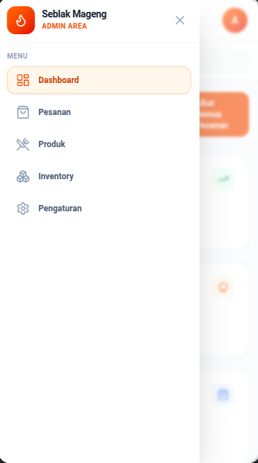
Navigasi Area Admin
Drawer admin menyediakan akses ke dashboard, pesanan, produk, inventory, dan pengaturan toko. Area ini ditujukan untuk pengguna dengan peran admin.
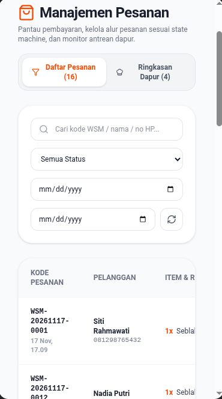
Manajemen Pesanan Admin
Halaman manajemen pesanan menyediakan tab daftar pesanan dan ringkasan dapur, serta kontrol pencarian dan filter status atau tanggal. Gambar menampilkan data pelanggan; samarkan nama, nomor telepon, alamat, dan kode pesanan sebelum dokumen dipublikasikan.
- BloggerNews Mobile
- KonsulYuk! UNPI
- KRS Mahasiswa
- GempaApp
- Warung Seblak Mageng